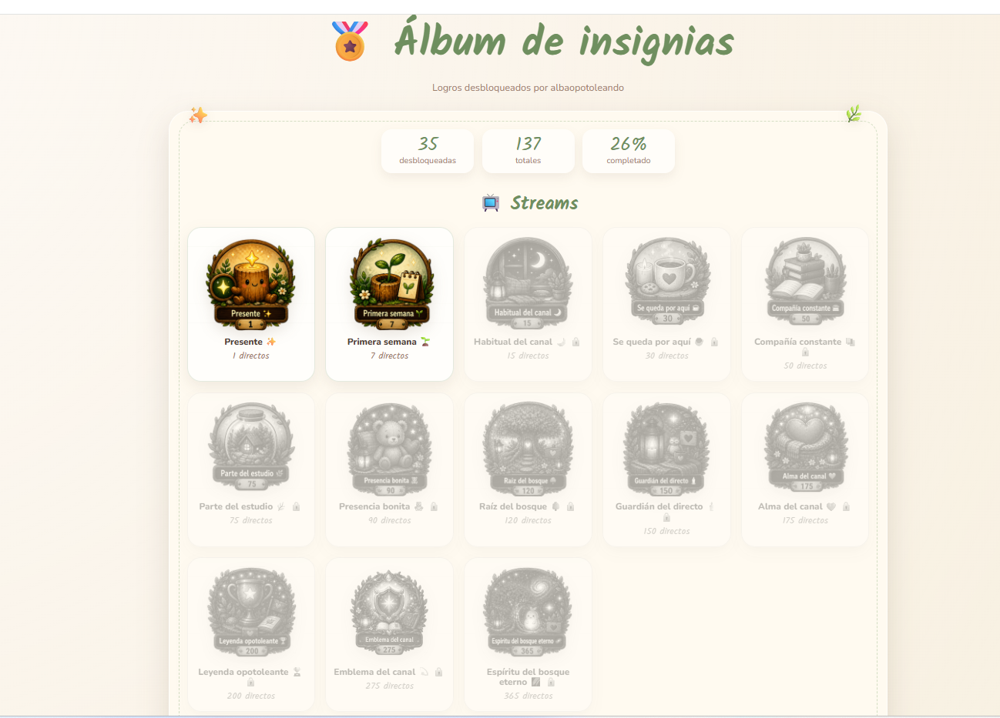

🏅 Guía de Insignias
📚 Ir directamente a...
Pulsa en el apartado que quieras consultar.
✨ ¿Qué son las insignias?
Las insignias son logros coleccionables exclusivos de nuestra comunidad. Se calculan y desbloquean automáticamente cuando alcanzas determinados hitos dentro de las diferentes dinámicas del canal.
Cada medalla representa un pequeño pedacito de tu recorrido: directos compartidos, horas de estudio, tareas completadas, retos superados, árboles, XP de minijuegos, ejercicio, rachas y otras formas de participar.
Algunas llegan rápido. Otras requieren una cantidad de constancia ligeramente preocupante. 😌
🎮 ¿Cómo se consiguen?
- 📺 Streams: Por acumular asistencia acompañándonos en distintos directos.
- 🔥 Rachas: Por mantener una racha de directos consecutivos vistos y compartirla en el chat de Twitch.
- 📚 Estudio: Por acumular horas totales de enfoque y productividad en las sesiones.
- 📝 Tareas: Por completar tareas de tu lista usando el sistema de tareas del canal.
- 🎯 Retos: Por completar los retos personales de movimiento, descanso y autocuidado.
- 💪 Ejercicio: Por registrar tus días de actividad física y autocuidado.
- 🎮 Minijuegos: Por acumular XP conseguida directamente al acertar respuestas en las trivias y juegos de los descansos.
- 🌳 Bosque: Por ampliar tu colección y conseguir árboles dentro del bosque virtual.
- 🫶 Apoyo: Por participar en determinadas dinámicas de apoyo y comunidad.
- ✨ General: Logros maestros que avanzan según la cantidad total de insignias diferentes que hayas conseguido.
📝 Insignias de tareas
Cada vez que completas una tarea con
!hecha, !feito o !feita,
esa tarea suma para tu progreso acumulado.
Las insignias se desbloquean automáticamente al alcanzar estas metas:
Puedes consultar las metas desde el chat con
!insigniastareas o, en gallego,
!insigniastarefas.
🎯 Insignias de retos personales
Los retos personales también tienen su propia colección de insignias. Cada reto que termines correctamente suma 1 reto conseguido a tu progreso histórico.
Si un reto no se completa, no suma. Los retos antiguos que ya habías superado también cuentan para tu progreso.
Puedes consultar las metas con:
!insigniasretos
🎮 Insignias de minijuegos
Las insignias de minijuegos avanzan ahora según la XP conseguida directamente al acertar respuestas.
La XP puede variar según el minijuego y las pistas utilizadas. Los bonus adicionales de rachas o logros siguen existiendo dentro del sistema, pero no se vuelven a sumar al contador de insignias para evitar contar la misma recompensa dos veces.
Puedes consultar las metas con
!insigniasminijuegos
o, en gallego,
!insigniasminixogos.
🔥 Rachas de visualización
Las insignias de racha premian haber estado presente en varios directos consecutivos.
Importante: para que el sistema pueda registrar tu racha, tienes que compartirla en el chat de Twitch cuando aparezca la opción.
Al compartirla, el bot comprobará automáticamente cuántos directos seguidos llevas y desbloqueará todas las insignias de racha que te correspondan y que todavía no tengas.
Empieza siendo una visita casual y puede terminar en “casi paga alquiler”. Tú sabrás hasta dónde quieres llegar. 🏠
Puedes consultar las metas con:
!insigniasrachas
🏅 Estatus y Prestigio
Las insignias no otorgan monedas ni premios físicos; funcionan como un sistema de coleccionismo, progreso y estatus visual.
Al desbloquear logros aumentas tu colección, avanzas en las insignias generales y puedes aparecer entre los mayores coleccionistas del canal.
💬 Comandos de insignias
!insignias→ Muestra todas las categorías disponibles.!insigniasstreams→ Consulta las metas de asistencia a streams.!insigniasrachas→ Consulta las metas de rachas de visualización.!insigniasestudio→ Consulta las metas de estudio.!insigniastareas→ Consulta las metas de tareas completadas.!insigniasretos→ Consulta las metas de retos personales.!insigniasapoyo→ Consulta las metas de apoyo.!insigniasejercicio→ Consulta las metas de ejercicio.!insigniasminijuegos→ Consulta las metas de minijuegos por XP.!insigniasbosque→ Consulta las metas del bosque virtual.!insigniasgeneral→ Consulta las metas generales.-
!misinsignias→ Consulta cuántas insignias has desbloqueado y tu progreso por categorías. -
!infoinsignias→ Envía un resumen básico del sistema en el chat. -
!rankinginsignias→ Muestra el Top 5 de mayores coleccionistas de insignias del canal. Actualizar álbum de insignias→ Refresca tu álbum visual con tus medallas actuales. 3.000 puntos.Ver mis Insignias→ Te permite consultar tu colección visual de insignias. 10.000 puntos.
📖 Álbum visual web
Cada espectador puede tener su propio álbum visual de insignias.
Las medallas que ya hayas conseguido aparecerán a todo color, mientras que aquellas cuyos requisitos todavía no hayas alcanzado permanecerán bloqueadas y en escala de grises.
Cuando quieras actualizar tu álbum canjea Actualizar álbum de insignias. Pero antes debes canjear: Ver mis Insignias para crearlo.
En el álbum encontrarás también las categorías 📝 Tareas, 🎯 Retos personales y los 🎮 Minijuegos medidos por XP, junto al resto de categorías.
👀 Ejemplo rápido de cómo se ve
Así se ve un álbum real de insignias del canal: algunas medallas aparecen ya desbloqueadas y otras siguen bloqueadas hasta que alcances sus metas.

La idea es que puedas ver de un vistazo tu progreso, las categorías y todo lo que te queda por desbloquear ✨
🏆 Ranking de coleccionistas
Todas las insignias diferentes que desbloquees cuentan para tu colección total.
Con !rankinginsignias puedes consultar el Top 5 de usuarios
con más insignias desbloqueadas.
No importa de qué categoría procedan: Streams, Rachas, Estudio, Tareas, Retos, Ejercicio, Minijuegos, Bosque, Apoyo y General forman parte de tu colección.
🌟 Categoría General
Las insignias generales no miden una única actividad. Se desbloquean según la cantidad total de insignias diferentes que hayas conseguido.
Para avanzar cuentan tus logros de Streams, Rachas, Estudio, Tareas, Retos, Ejercicio, Minijuegos, Bosque y Apoyo.
Con las nuevas insignias de retos también aumenta el recorrido total disponible dentro de la colección.
Así que no hace falta obsesionarse con una sola categoría: participar un poquito en todo también tiene premio. ✨
🔗 Guías relacionadas
🌳 Bosque virtual:
https://bibiopotoleando.github.io/bosque-visual/guia_bosque.html
📝 Tareas:
https://bibiopotoleando.github.io/guia-tareas/guia_tareas.html
🎁 Canjeos:
https://bibiopotoleando.github.io/guia-canjeos/guia_canjeos.html
📌 Estados:
https://bibiopotoleando.github.io/estados-y-bebidas/estados.html
☕ Bebidas:
https://bibiopotoleando.github.io/estados-y-bebidas/bebidas.html
🎯 Retos:
https://bibiopotoleando.github.io/retos/retos.html
🎮 Minijuego:
https://bibiopotoleando.github.io/minijuego-guia/index.html
🏅 Insignias:
https://bibiopotoleando.github.io/guia-insignias/guia_insignias.html
📦 Material:
https://bibiopotoleando.github.io/estados-y-bebidas/material.html
👾 Discord:
https://bibiopotoleando.github.io/discord/index.html